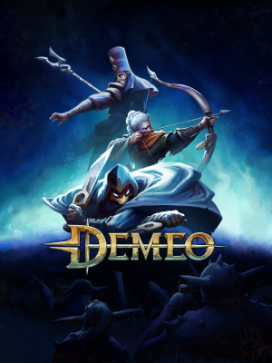

Summery:
“
"Demeo" is a virtual reality (VR) dungeon-crawling game developed and published by Resolution
Games. It was released in May 2021 and is available on the Oculus Quest and PC VR
platforms.
In Demeo, players take on the roles of adventurers exploring a procedurally-generated dungeon filled with traps,
puzzles, and monsters. The game is played in turns, with each player taking a set of actions before passing the turn
to the next player. Players can choose from four different character classes, each with their own unique abilities
and play styles.
One of the unique features of Demeo is its tabletop-inspired gameplay. The game is presented as a virtual board
game, with the players' avatars represented as miniature figurines on a board. The game also supports cross-platform
play, allowing players on different VR platforms to play together.
Demeo has received positive reviews for its immersive gameplay, intuitive controls, and engaging multiplayer
mechanics. It has also been praised for its attention to detail and the depth of its gameplay mechanics.
„
Read more...
|

|